Ypê76anos de marca
Marca mais lembrada pelos brasileiros no Folha Top of Mind 2026. Na loja, lembrança precisa virar escolha.
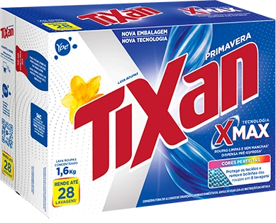
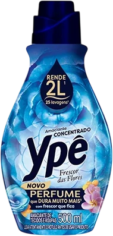
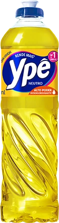
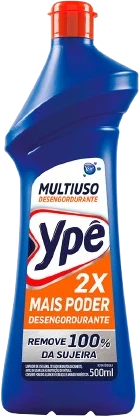
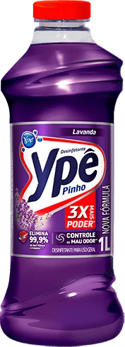
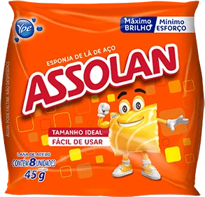
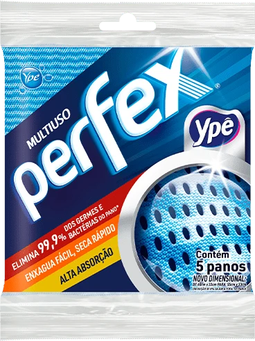
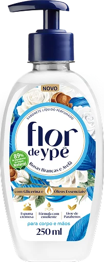
Enxoval completo, engenharia de custo e tecnologia de PDV · todas as marcas Ypê
A marca mais lembrada do Brasil, num corredor que decide em segundos.
Marca mais lembrada pelos brasileiros no Folha Top of Mind 2026. Na loja, lembrança precisa virar escolha.
Categoria onde perfume e rendimento decidem a compra, e o shopper precisa entender a diferença.
Disputa o ponto natural da pia com marcas tradicionais. Precisa estar junto do lava-louças.
Vende bem fora do corredor: perto de utilidades, bazar e da própria linha multiuso.
Do multiuso ao desinfetante. Sem bloco de marca, a gôndola vira uma fila de frascos parecidos.
Flor de Ypê e Banho a Banho levam a marca para outro corredor, com outro comprador.
Fonte: ype.ind.br, portfólio e notícias (consulta em 10/11/2026). Folha Top of Mind 2026, conforme divulgado pela Ypê.
Kit por família, não por SKU
O kit certo para cada canal
Engenharia antes da arte
AR e QR mostram o resultado
Auditoria com foto e QR
Preço e share medidos na loja
Do KV à peça, de cada canal ao QR na mão do shopper.
“Qualidade que se vê, certeza que é Ypê!”A assinatura da Ypê vira regra de PDV: cada peça mostra um resultado que o shopper consegue ver, cheirar ou testar. Nenhuma peça só repete o logo.
Mesma gramática visual em todas as marcas: o corredor inteiro reconhece a Ypê de longe.
Rendimento, perfume e brilho demonstrados na peça, no AR ou no QR.
A base é produzida uma vez; a cada onda troca só a camada gráfica.
QR por loja e por peça, auditoria com foto e painel semanal.
Lava-louças Ypê, Assolan e esponjas no mesmo bloco: a pia inteira resolvida numa parada.
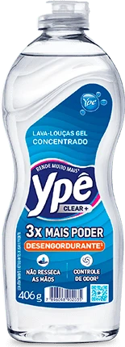
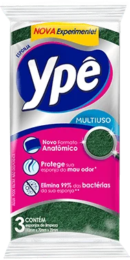
O lava-louças Ypê puxa a categoria. Assolan e esponjas entram como complemento, no mesmo ponto da gôndola.
Tixan Ypê, amaciante e tira-manchas contam uma história só: da mancha ao perfume.
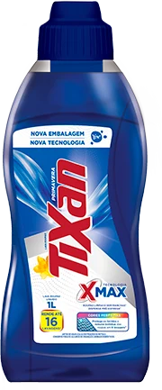
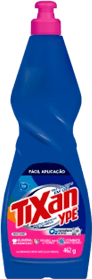
A categoria em que o shopper mais precisa entender a diferença entre produtos. A peça explica, a amostra convence.
Multiuso, desinfetante, limpador perfumado e Perfex organizados por cômodo, não por frasco.
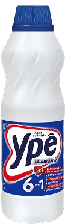
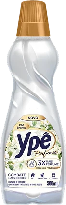
A família com mais frascos parecidos. O bloco por cômodo (cozinha, banheiro, chão) ajuda o shopper a escolher sem procurar.
Flor de Ypê e Banho a Banho levam a confiança da marca para o corredor de higiene.
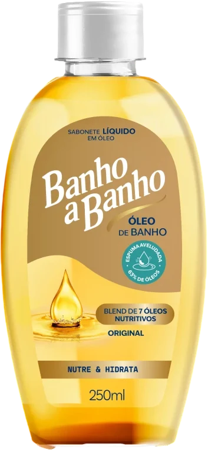
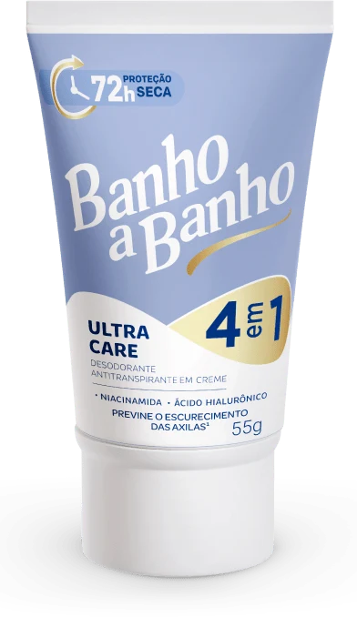
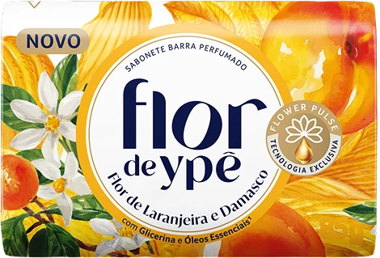
Outro corredor e outro comprador. A peça precisa apresentar a Ypê como marca de cuidado, não só de limpeza.
KVs conceituais para alinhar direção. A direção de arte final é desenvolvida com o marketing da Ypê. Embalagens: ype.ind.br.
Substratos e medidas de referência. A especificação final sai da engenharia de cada peça e do volume por canal.
Volume e preço. O shopper decide de longe, com o carrinho cheio.
Descoberta e troca para a linha premium. Tem espaço para experiência.
Compra da semana. O bloco de marca precisa estar organizado e o preço, claro.
Reposição rápida. Pouco espaço e ninguém para montar além do lojista.
Busca e recompra. A mesma narrativa do KV no e-commerce e no retail media.
Sugestão de kit por canal. A grade final depende da lista de lojas e do espaço negociado em cada rede.
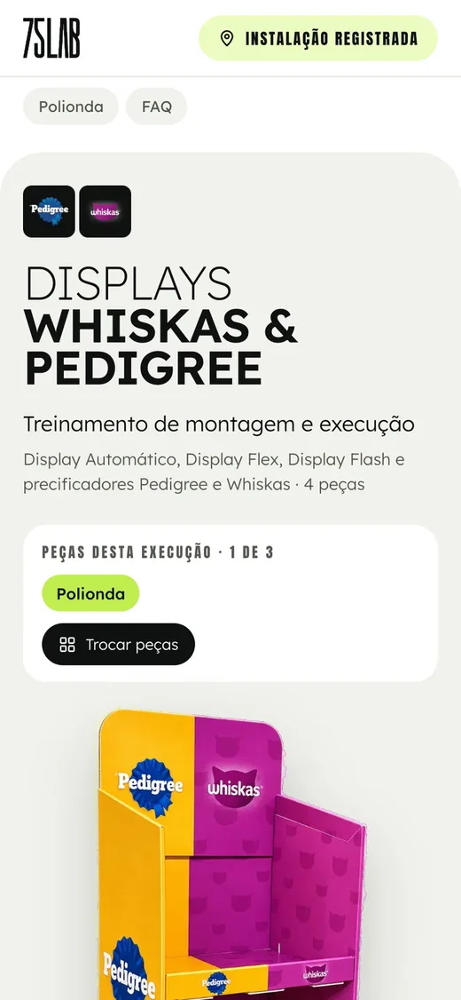
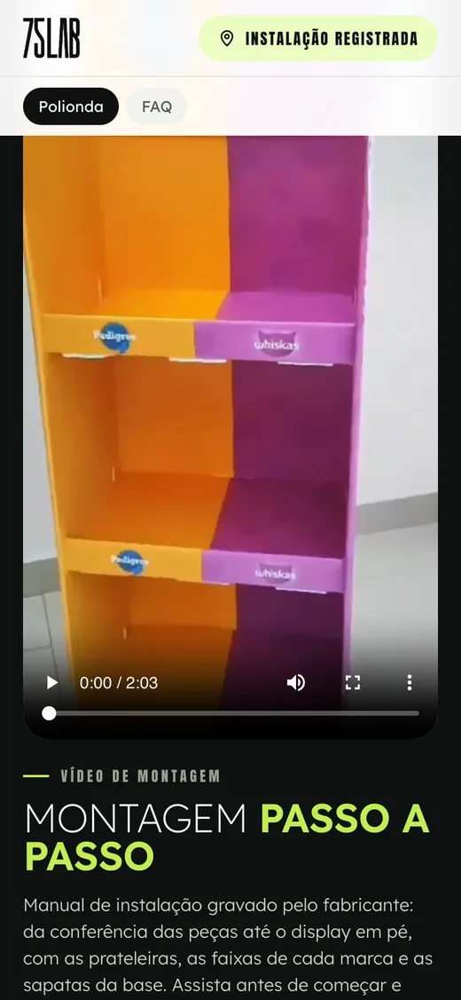
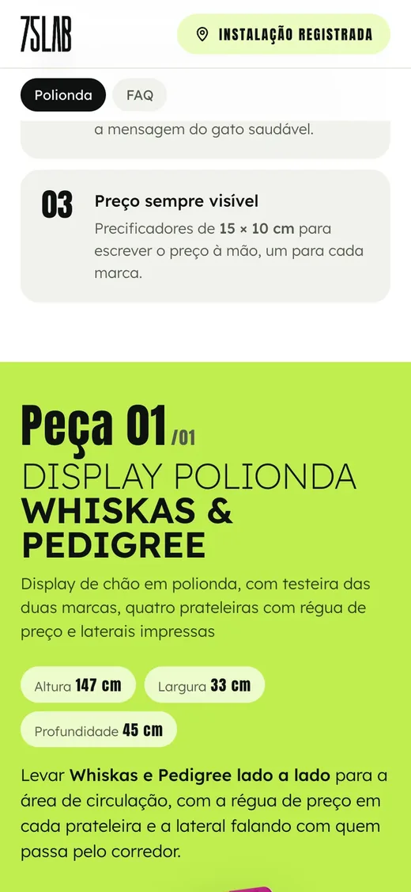
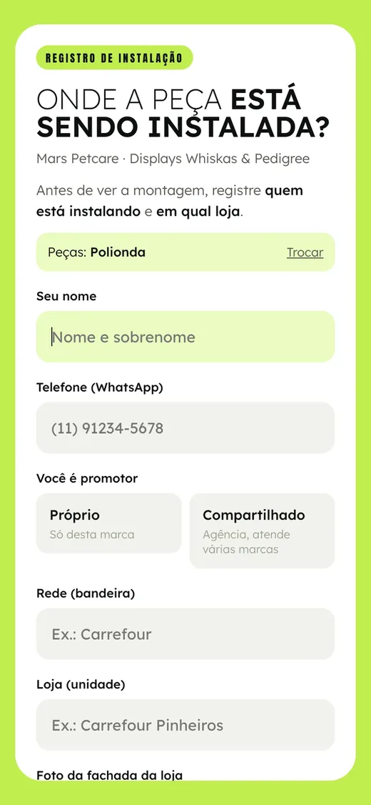
Telas reais da plataforma de QR da 75 LAB, em projeto de outro cliente, mostradas como exemplo. A versão Ypê usa as peças e o KV do MPV 2027.
Faxina de começo de ano e volta às aulas. Cozinha e casa em destaque.
Roupa pesada e perfume. Lavanderia protagonista, Flor de Ypê no cross.
Casa aberta e perfumada: multiuso, desinfetante e Perfex juntos.
Packs no atacarejo e no digital. Cozinha pronta para a ceia.
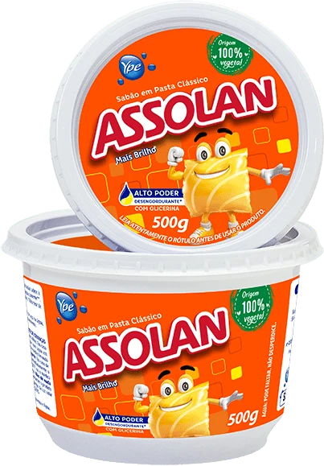
Calendário proposto. As datas finais seguem o plano comercial e de lançamentos da Ypê.
Três portas de entrada. Comece pela que dói mais.
Engenharia reversa das peças atuais da Ypê, com propostas de revisão de construção e de substrato para produzir, transportar e montar com mais eficiência.
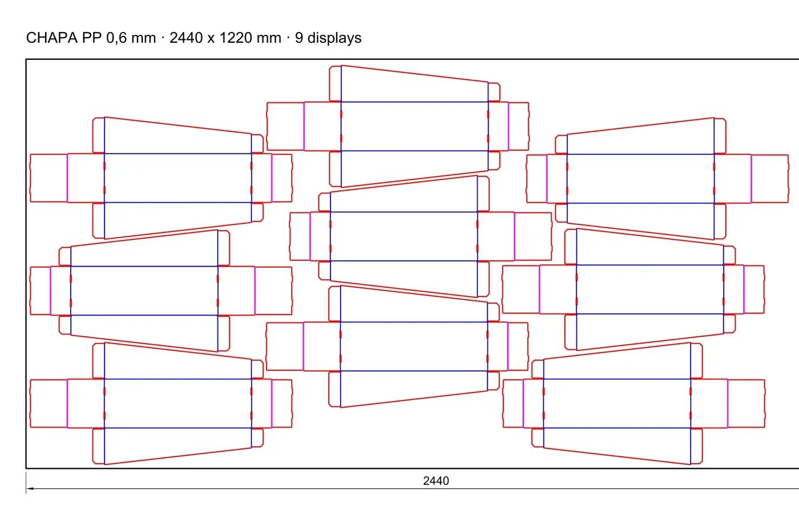
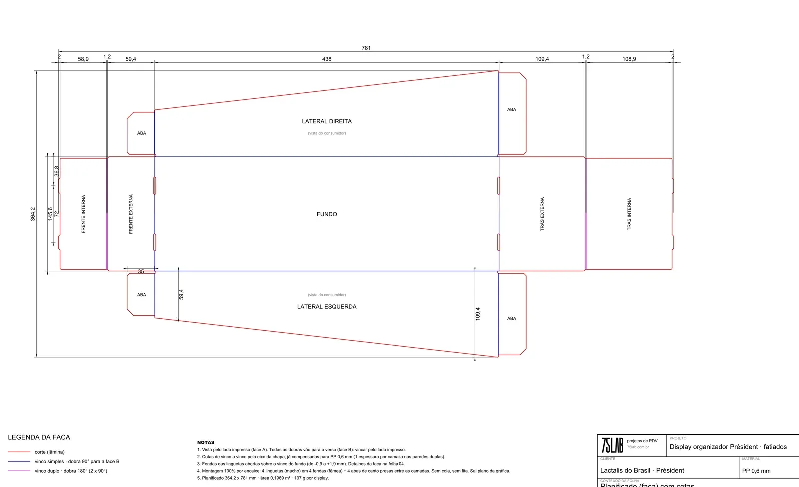
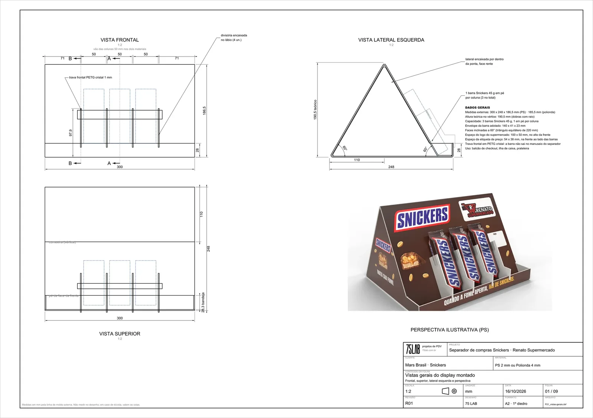
Pranchas reais de engenharia da 75 LAB em projetos de outros clientes, mostradas como exemplo do que a Ypê recebe. Clique para ampliar.
Ficha ilustrativa: os números reais saem do diagnóstico das peças da Ypê. “Até −25%”: 75lab.com.br, produção comprada direto do fornecedor certo.
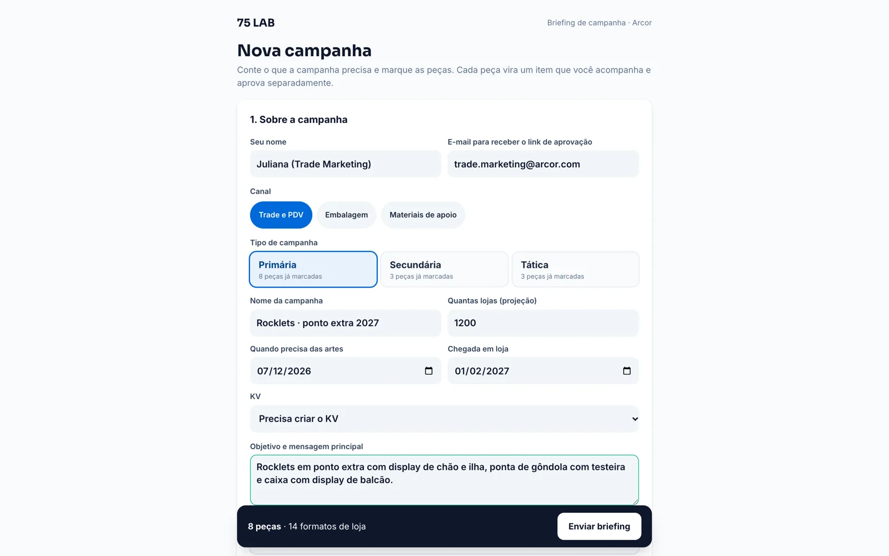
KVs sazonais, desdobramento de peças, adaptação por rede, sell-in e catálogos. Com engenharia no mesmo time, a criação já nasce produzível e dentro do custo.
Desdobramentos e adaptações das ondas, com arte-final.
Essencial + KVs sazonais, redes-chave e kits de sell-in.
Performance + todas as marcas, AR, QR e retail media.
Capacidades de referência, ajustáveis ao volume real. Números da própria 75 LAB, medidos no Ariuno de 28/10/2025 a 27/10/2026. Tela do Ariuno em modo demonstração.

Tela real do painel da 75 LAB em modo demonstração, com dados fictícios. Os módulos de preço, ruptura e share entram na configuração da Ypê.
Involves: Involves Stage, informações públicas divulgadas pela empresa na imprensa (Mundo do Marketing, IT Forum, Central do Varejo). Comparativo da 75 LAB; condições comerciais da Involves não foram consultadas.
Substrato, chapa, componentes, frete e montagem revisados.
KV por família, desdobrado por canal, com AR e QR.
Kit por canal, manual no QR e registro da instalação.
Auditoria, preço, ruptura, share e positivação com foto.
Como vamos medir, e da aprovação à primeira onda em quatro meses.
Escolha dos modelos e das prioridades.
Inventário e desmontagem do enxoval atual. Regional piloto definida.
Plataforma criativa, manual de desdobramento e revisão técnica.
Protótipos montados, auditoria antes e depois, lojas de controle.
Produção com fornecedores cotados e kits por canal.
Fee mensal, painel semanal e comitê trimestral.
Quem somos, as provas e o próximo passo.
A 75 LAB nasceu da soma de dois lados que quase nunca se sentam à mesma mesa: o varejo e a indústria. Por mais de 15 anos vivemos a distância entre a intenção comercial de uma marca e o que de fato acontece na loja. Existimos para fechar essa distância.
 ← valor →
← valor →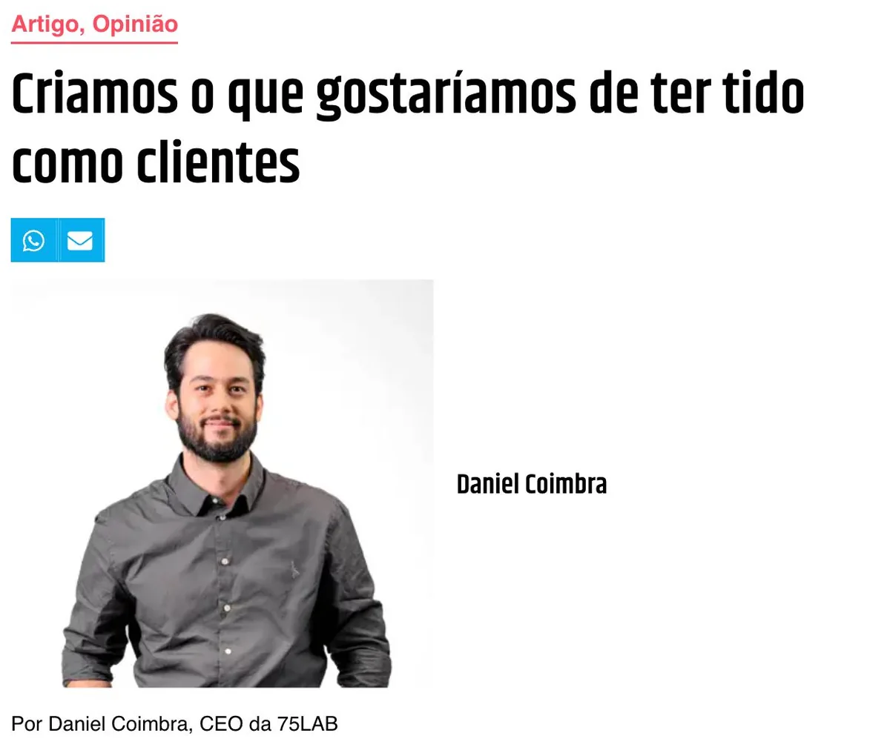
Criamos o que gostaríamos de ter tido como clientes.“A grande agência tradicional aprendeu trade marketing. Nós vivemos isso.”Daniel Coimbra, cofundador da 75 LAB · PropmarkClique para ler a matéria ↗propmark.com.br/artigos/criamos-o-que-gostariamos-de-ter-tido-como-clientes gironews.com

A loja me ensinou o que nenhuma apresentação ensinava.“Execução não é uma consequência da estratégia. Execução é parte da estratégia.”Caique Becker, cofundador da 75 LAB · Giro News, 26/06/2026Clique para ler a matéria ↗gironews.com/opinioes/a-loja-me-ensinou-o-que-nenhuma-apresentacao-ensinava
Os sócios vêm do varejo e da indústria: os dois lados do balcão estão na mesma mesa.
Montamos a estrutura pela demanda de cada cliente, não um pacote pronto.
Hub de especialistas e fornecedores, com governança ponta a ponta e sem markup oculto.
Medimos o que entregamos: peça a peça, loja a loja.
Fonte: 75lab.com.br, números da 75 LAB.
A peça sai da criação com executivo pronto para a fábrica.
Chapa aproveitada, kit plano e material certo no lugar certo.
Todos os fornecedores cotam o mesmo executivo.
O cliente vê a peça na loja antes de pagar a fábrica.
Foto, loja e data de cada instalação, sem planilha.
Prazo, versão e aprovação de cada peça num lugar só.
Componente com código: troca só o que quebrou.
Sócios que vieram do varejo e da indústria.
Dados da própria 75 LAB, não de cliente. Fonte: Ariuno, sistema de gestão da 75 LAB · 28/10/2025 a 27/10/2026 · horas apontadas de jul a set/2026. Baixa complexidade: jobs com até 8 h de trabalho; alta: acima de 16 h.
Supermercado, atacarejo e loja de categoria: as marcas que atendemos negociam com os mesmos compradores e disputam as mesmas pontas.


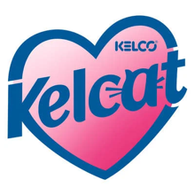


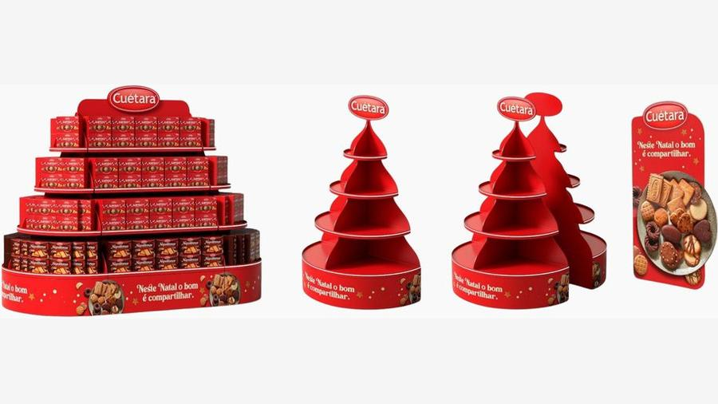

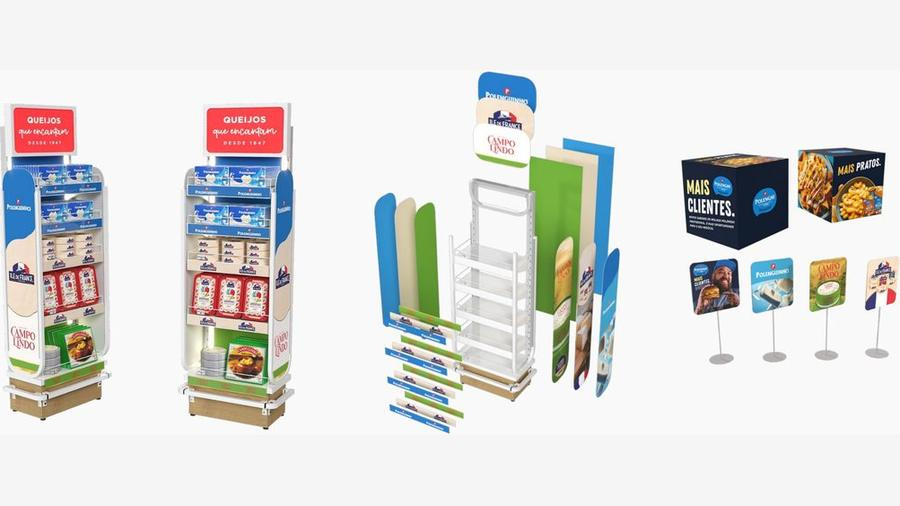


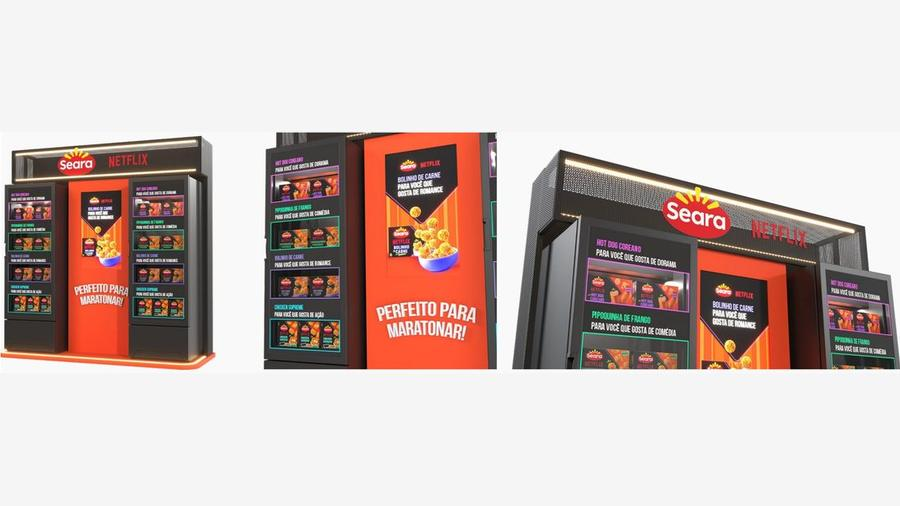
“Desde a primeira reunião, me surpreenderam com essa parte de planejamento.
“Um programa viável de execução. Datas de aprovações, datas de execução, finalização para a entrega do stand.”
Vídeos de projetos da 75 LAB: Instagram @setecincolab, site 75lab.com.br e acervo de cases.
Escolher os modelos, as famílias e os canais da primeira onda.
Amostras físicas e a planilha de custos, volumes e fornecedores.
Regional, redes e 30 lojas, com grupo de controle.
Escopo, cronograma e valores dos modelos escolhidos.
Diretor Administrativo e Comercial
daniel.coimbra@75lab.com.br11 99127-0939Diretor de Operação e Trade Marketing
caique.becker@75lab.com.br11 98676-563475 LAB Estratégia, Design e Produção Ltda · CNPJ 55.470.982/0001-77 · CENU, Torre Norte, Av. das Nações Unidas, 12.901, Brooklin, São Paulo, SP · contato@75lab.com.br · 75lab.com.br ×
×A apresentação foi desenhada na horizontal. Deitado, o celular mostra a tela inteira.